也紀念我們永遠的朋友 李士傑先生（Shih-Chieh Ilya Li）。
打造個人影音資料庫
前言
隨著寬頻網路的普及， YouTube 等這類影音網站的資料越來越豐富，品質也越來越好，但這類網站並沒有提供下載的功能。如果想將網站上的音樂或影片抓下來保存，除了安裝特定的下載軟體外，也可以透過一些線上影音轉檔網站，只要輸入影片網址，就可將其轉成 mp3、mp4 等影音格式，然後儲存下來，看似簡單方便，而且也不用任何費用。
而本文將告訴各位一種更簡單的方法，讓您看到什縻，就抓什麼，另外還介紹了一個轉檔軟體，讓您一次將抓下來的檔案轉換成想要的格式，同樣也是免費的，但速度卻比前者快的多。
為何要打造個人影音資料庫？
- 提供百分百的可看率：有時您所在地網路突然不通，甚至沒有網路，此時就算擁有最夯的 iPhone 6，也是英雄無用武之地。
- 提供百分百高穩定度的影音享受：各類行動通訊設備的上網品質會受到地點、地形、建物遮蔽及使用人數等因素而有所影響。因此線上收看，不僅品質穩定度較無保障，並至有斷訊之虞。
- 大幅縮短資料搜索時間：由於資料是下載後經過分類後再進行儲存的，想要再使用時，所花費的搜索時間，自然比在茫茫影音海中要快得多，有時甚至還找不到。
- 音訊檔內容種類較多且多樣化：或許有人會問，網路上有那麼多 mp3 網站提供下載服務，為何還要這大費周章的製作這些 mp3？由於 YouTube 上影音資料不僅數量多而且種類也形形色色，舉凡相聲、英語教學、古典音樂... 等等。所以自己抓自己轉，也不啻是個好辦法。
- 長時間的收藏：有時看到一些不錯的影片，把它抓下來，隨時都可以觀賞，如果一直都是在線上收看，搞不好哪天就看不到了。
網路影音的著作權與使用之合法性
我國著作權法規定：著作權人享有把自己的著作放在網路上供別人瀏覽、觀賞、聆聽或下載的權利，這是權利人獨享的，我們稱它為「公開傳輸權」與「重製權」。換句話說，每個人上傳、下載、轉貼及傳送著作的行為，除了合理使用外，原則上應事先得到著作權人的同意或授權，才是合法的行為。
網路著作權合理使用範圍原則上，只要是以非營利之個人使用目的，儘可能解釋為屬於合理使用的行為。下載來供自己閱讀的可屬合理使用，轉寄給他人或轉貼到其他版，及將內容整理製成（修改刪除）成精華版的情形，在相當範圍內也可以解釋為不侵害他人著作財產及人格權之合理使用情形。此外、對於單純供個人非營利性之使用，或是基於報導、評論、教學、研究或其他正當目的必要，在合理範圍內所做之引用或重製，應儘量考慮予以放寬。
至於下載網路影音，再分享轉貼到其他網站，到底有沒有違法？
重點是影片著作權是否為你所有，如果你是著作權人，自然就不會有觸法的問題。若不是著作權人，而是其他網友上傳的影片，則需看影片著作權人是否追究其責任（若影片為網友上傳，非影片著作權人，該名網友並沒有權利追究責任），因著作權法是告訴乃論，不告不理。簡單來說若非著作權人，則第一散播者最危險。
所以正確解答是─「還沒被告之前，沒違法！」。
意思就是說，任意使用、播放他人影片行為是侵權的，如果有影片著作權人堅持提出告訴，是構成違法的，如果影片著作權人不追究就沒事，所以有沒有事，要看有沒有人提告。
至於目前流傳的 YouTube 影片，其實大部份都是未經著作權人授權的影片〈如歌手 mv、節目影音〉，但是大家都習以為常，不以為意，而不自覺那都是侵權的行為。
但為何鮮聞有網友挨告呢？主要是因為著作權法罰金是繳國庫的，單純的使用並不構成民事求償要件，著作權人即使提告也拿不到半毛錢，花時間金錢又沒好處。加上法律上又有「微罪不舉」的慣例，所以比較不會有人為此小題大作的。
重點是要看是否有「營利行為」（就是用來賺錢），通常是有營利行為或是會排擠到商品正常銷售（例如有提供下載），才會引起著作權人注目進而提告，不然通常都是會睜一隻眼閉一隻眼。
簡單的說，如果你要在自己的網頁放上影音，要記得以下兩點。
一是市面上有在賣的不要放。市場有在賣表示它是商品，你提供，就是擋人財路，可能別人有得看，就不買商品了。
二是不要放毀謗或會造成他人名譽受損的內容。不管是否為事實或只是轉載，像那種會傷害到人的影片千萬別碰，碰了就是你的責任了。
總之，各位只要謹記著「眾樂樂不如獨樂樂」的原則，基本上是不會問題的。
影音檔的格式介紹
-
FLV：FLV 串流媒體格式，所謂「串流技術」就是把連續的影音資訊，經過壓縮處理後放上網站伺服器，讓網友可以一邊下載一邊觀看、收聽的網路傳輸技術，是一種新的影音格式，它的出現有效的解決了影音檔案匯入 Flash 後，使匯出的 SWF 檔案體積龐大，不能在網路上有效使用等缺點。一般 FLV 檔案包在 SWF PLAYER 的殼裡。FLV 可以提供原始位址很好的保護，不容易被下載到，因此可說是起了一些保護版權的作用。但還是有些影音格式轉換軟體將 FLV 轉成一般的影音格式，如中國的「軟體格式工廠」。目前 YouTube、NICONICO 動畫、Google Video、Yahoo! Video、MySpace、以及中國的「優酷」、「酷 6」等大部分影音分享網站，均採用這個格式。
-
RMVB：相較於一般使用了固定的位元率的 RealMedia 影音文件格式 .RM，副檔名多出的 VB 指的是可變動的位元率 (Variable Bitrate)。也由於變動位元率的緣故，可以在畫面變動不大或是簡單的影片片段，降低位元率；反之，在畫面變動大或是動態的影片片段，提高位元率，藉以在檔案大小以及畫質之間取得一個平衡。一般而言，在較低的平均位元率下，RMVB 格式的影像畫質會較原先固定位元率的 RealMedia 檔案來得要好。
-
MP3：為音頻壓縮檔，是指 MPEG-1 Layer3（MPEG-1 的第三層聲音），也就是說，MP3 是利用 MPEG-1 規範，將音訊壓縮製成的聲音檔。
-
MPEG：為音頻、影音壓縮檔，過去大家常看的 VCD 就是使用 MPEG-1 規範所製作的影片，目前的 DVD 影片就是使用 MPEG-2 規範所製作的。
-
MP4：就是 MPEG-4 的簡稱，它包含了影音、音訊、電腦資訊合成資料，主要是在網路上作多媒體檔案的傳輸用，影像畫質接近 DVD、音質媲美 CD，但有更高的壓縮比。同樣是影片檔案，以 MP4 錄製的檔案，容量會小很多，所以除了網路傳輸外，一般新上市的隨身影音播放器或手機（如 iPhone、iPod)，都是以支援此種格式為主。
-
WEBM：WebM 是一個由 Google 資助的專案，目標是構建一個開放、免版權費用的影音檔案格式。該影音檔案格式應能提供高品質的影音壓縮以配合 HTML 5 使用。WebM 專案是一個使用 BSD 許可證的開源專案。它採用了 On2 Technologies 開發的 VP8 及其後續版本 VP9 影音編解碼器和 Xiph.Org 基金會開發的 Vorbis 音訊編解碼器，使用的封裝格式則以 Matroska 格式為基礎。Android 從其 2.3 版本開始支援 WebM格式。羅技計畫使用 WebM 做為其影音通訊服務的一部分。Chromium r47760 和更新的版本, Google Chrome 6 以及新版 Opera 10.60、以及新版 Mozilla Firefox 4 以及更新的版本已經支援 WebM。另外微軟也宣布，只要在本地安裝了 VP8 編解碼器，Internet Explorer 9 也能支援 WebM 檔案格式。
-
MOV：是 Apple 公司開發的一種音訊、視頻檔案格式。
-
WMV：是微軟開發的一種視頻編碼格式，它是 Windows Media 架構下的一部分。
-
AVI：由微軟推出的一種多媒體影音格式檔。
影音檔畫面品質
影片畫質常以「???p」來表示，如 「480p」，指的就是一種影音檔畫質顯示格式。字母 p 表示逐行掃描 (progressive scan)，數字 480 表示其垂直解析度，也就是垂直方向有 480 條水平線的掃描線；而每條水平線解析度有 640 個像素，縱橫比 (aspect ratio) 為 4:3，即通常所說的標準清晰度電視格式 (standard-definition television，SDTV)。影格頻通常為 30 赫茲或者 60 赫茲。一般描述該格式時，最後的的數位通常表示影格頻。480p 通常應用在使用 NTSC 制式的地區，例如北美、日本、台灣等。480p 60 格式被認為是準高清晰電視格式 (enhanced-definition television，EDTV)。目前 flv 和 mp4 檔案的影音編碼較齊全，建議下載這兩種類型的檔案；在解析度方面 480p、720p 的畫面已足夠清晰，太低會有格狀糢糊，太高（高清畫質）則效能不夠高的電腦跑起來會很吃力。表 1 為不同格式影音檔之品質說明。
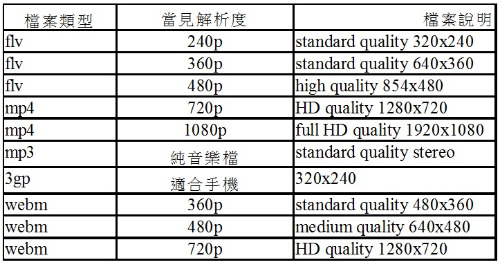
▲表 1：不同格式影音檔之品質說明
個人影音資料庫的資料來源
- YouTube 網站：是設立於美國的一個影片分享網站，讓使用者上載、觀看及分享影片或短片。公司於 2005 年 2 月 15 日註冊，由華裔美國人陳士駿等人創立，網站的口號為「Broadcast Yourself」（表現你自己）。網站的標誌意念來自早期電視顯示器（陰極射線管）。
至今 YouTube 已經成為同類型網站的翹楚，並造就許多網上名人，激發網上創作。YouTube 總公司位在加利福尼亞州聖布里諾，網站藉由 Flash Video 或 HTML5 影片來播放各式各樣由上傳者製成的影片內容，包括電影剪輯、電視短片、音樂錄影帶等，以及其他上傳者自製的業餘影片，如 VLOG、原創的影片等。大部分 YouTube 的上傳者僅是個人自行上傳，但也有一些媒體公司，如哥倫比亞廣播公司、英國廣播公司、VEVO 以及其他團體與 YouTube 有合作夥伴計劃，上傳自家公司所錄製的影片。無 Google 帳號的使用者，可以直接觀看Youtube中的影片，但無法上傳影片。註冊使用者帳號便可無限數量上傳影片。當影片多次被舉報，經過審查，核實後，可能將具有暴力，情愛的內容定為「18 歲以上註冊使用者可以觀看」，而色情內容以及侵犯版權的內容（比如仍在上映或發行影碟的電影、電視劇或動畫片）將會被刪除。
- TED 網站：TED（指 Technology, Entertainment, Design 在英語中的縮寫，即技術、娛樂、設計。）是美國的一家私有非營利機構，該機構以它組織的 TED 大會著稱。TED 誕生於 1984 年，其創辦人是里查德·沃曼。2002 年起，克里斯·安德森接管 TED，創立了種子基金會 (The Sapling Foundation)，並營運 TED 大會。每年 3 月，TED 大會在美國召集眾多科學、設計、文學、音樂等領域的傑出人物，分享他們關於技術、社會、人的思考和探索。從 2006 年起，TED 演講的視頻被上傳到網上。截至 2010 年 6 月，TED 官方網站上收錄的 TED 演講視頻總數已經超過 700，這些 TED 演講的視頻的閱覽量已經超過了 5000 萬。所有的 TED 演講的視頻都是以創用 CC 的方式予以授權的。
個人影音資料庫建置流程
圖一為筆者建立個人影音資資料庫之流程，提供給各位參考。首先以 Firefox 登入 YouTube 網站或 TED 網站，接著點選您想下載的影片，當然事情也不是這麼簡單，就拿 Firefox 來說，一般的可能就不行，必須是加過料的才可以，至於其中之奧妙與操作步驟，將在後續章節加以說明。
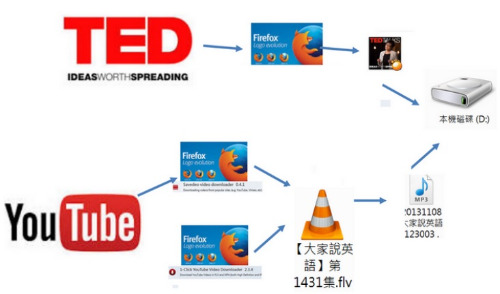
▲圖 1：個人影音資料庫建置流程
下載 YouTube 網站影音檔
本章節筆者將介紹三種下載 YouTube 網站上影音檔的方法，分別是透過下載轉檔網站、Firefox 加上「1-Click YouTube Video Download」及 Firefox 加上「Flash and Video Download」這類附加元件。
-
下載轉檔網站：如 ClipConverter，將欲下載檔案之網址貼在此類網站指定處，即可下載不同格式之影音檔。不過這種方法有些缺點，就是操作起來不太方便，還有就是速度太慢了，更重要的一點就是網站掛了就沒得玩了。
-
1-Click YouTube Video Download：以 Firefoxfox 登入 YouTube 網站，接著點選想要下載的影片，在播放的同時檢視畫面下方是否出現，如果沒有，則表示您的 Firefox 並未安裝「1-Click YouTube Video Download」這個附加元件。它支援了所有 YouTube 影片可用的的格式 (MP4、 FLV、 WebM、3GP) 還有各種的影音品質，從 144p 到 3072p。使用方法相當簡單，只要以滑鼠左鍵單擊它時就會出現一下載清單（如圖 2），可根據畫質及格式選擇下載檔案，單擊滑鼠左鍵即可下載。
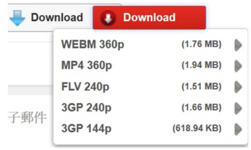
▲圖 2：1-Click YouTube Video Download 下載清單
- Flash and Video Download 附加元件：除了上述的附加元件外，這個附加元件也可以下載 YouTube 上的影片。同時它還可以下載網路上大部份 Flash 遊戲和其他影片。裝了這個附加元件，當您在觀賞影片時，網頁的右上角就會出現 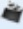這個東東。以滑鼠左鍵單擊它就會出現一下載清單（如圖三），同樣地、根據畫質及格式選擇下載的檔案，再單擊滑鼠左鍵，即可下載。
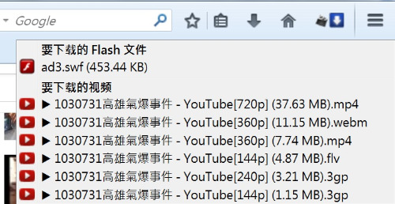
▲圖 3：Flash and Video Download 下載清單
下載 TED 網站影音檔
TED 網站上本來就提供 Download 圖案，所以理論上只要看得到應該就可以下載，以下則為筆者使用三種瀏覽器來下載 TED 影片所碰到的狀況。
- 以 Firefox 下載：登入 TED 網站後選擇欲下載之影片，播放影片就會出現 Download 圖案（圖 4），單擊滑鼠左鍵後便出現一下載視窗（圖 5），選擇影片孛幕之語系後，再按下 Download Video 方塊。接著影片重新播放，然後再以滑鼠右鍵單擊影片畫面，則出現一存檔下拉選單（圖 6），點選「另存影音檔案」即可下載。

▲圖 4：TED 網站影片 Download 圖案
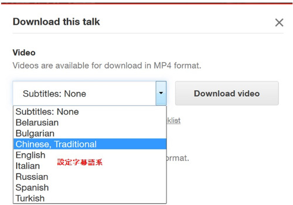
▲圖 5：TED 網站影片下載視窗
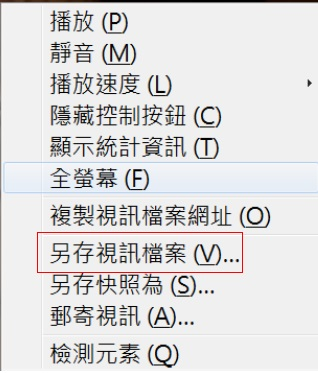
▲圖 6：TED 網站影片存檔下拉選單
-
以 Google Chrome 下載：登入 TED 網站後選擇欲下載之影片，一樣會出現 Download 圖案（圖4），單擊滑鼠左鍵後，也會出現下載視窗（圖 5），選擇影片字幕之語系後，再按下 Download Video 方塊後。接著就開始下載影片。由於沒出現存檔下拉選單，所以檔案跑到那裡也搞不清楚，也懶得搞清楚。
-
以 Internet Explore 下載：登入 TED 網站後選擇欲下載之影片，一樣會出現 Download 圖案（圖4），單擊滑鼠左鍵後就沒有有任何動靜了，由於沒時間等待所以也搞不清楚它在做什麼，更懶得搞清楚。
影音轉檔軟體介紹
- WinFF：WinFF 是個操作簡單但功能強大的影音轉檔軟體，是以 GPL 授權發佈，因此使用者不用擔心 License 的問題。WinFF 是靠 FFmpeg 程式來進行轉檔的，不過 FFmpeg 只有 command line（文字介面），圖 7 為 FFmpeg 的執行畫面，一副 linux shell 或是 MS-Dos 的樣子，看來相當的不友善，使用者必須輸入各種參數，十分不便。而 WinFF 提供了前端的圖形介面（圖 8）讓使用者更容易操作，內建了幾種輸出格式如給 iPod、PSP 或網路影片分享用的 FLV，使用者不需要自己調整參數就能馬上轉檔。除了內定的參數之外，也提供附加選項讓使用者自行細部調整，彈性很高。WinFF 是採用 FFmpeg 技術的影音轉檔軟體，由於 WinFF 是靠 FFmpeg 程式來進行轉檔的，所以基本上只要是 FFmpeg 支援的影音格式，WinFF 都可以轉換。
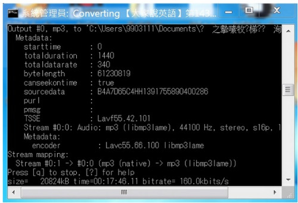
▲圖 7：FFmpeg 的執行畫面
WinFF 操作簡介
-
開啟 WinFF 後，先設定輸出目錄及欲轉換之影音格式，如圖 8。
-
按下 Add 選取欲轉換之檔案，可一次選取多個，如圖 9。
-
按下 Convert 進行轉換，如圖 10，此時便會跳出 FFmpeg 的執行畫面，如圖 7。
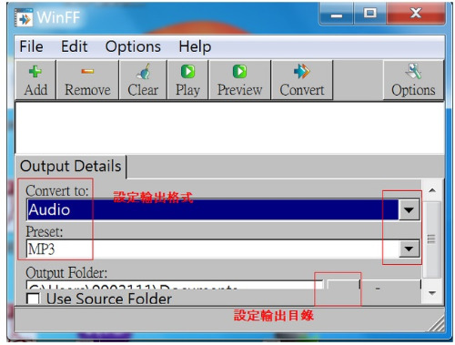
▲圖 8：WinFF操作介面
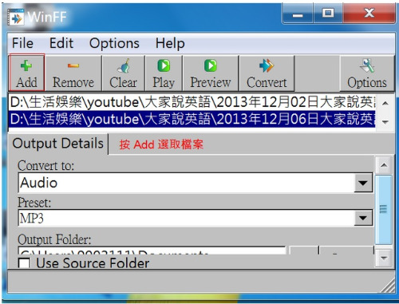
▲圖 9：選取欲轉換之檔案
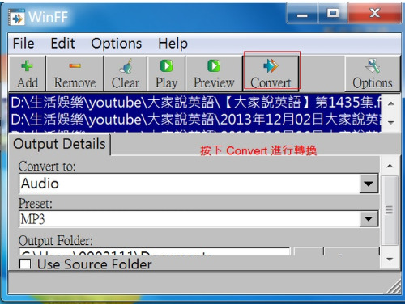
▲圖 10：進行檔案轉換
影音播放軟體介紹
- VLC 多媒體播放器 (VLC media player)：最初為 VideoLAN Client，是 VideoLAN 計劃的開放原始碼多媒體播放器，支援眾多音訊與視訊解碼器及檔案格式，並支援 DVD 影音光碟，VCD 影音光碟及各類串流協定。它也能作為單播或多播的串流伺服器在 IPv4 或 IPv6 的高速網路連線下使用。呼叫 FFmpeg 計劃的解碼器與 libdvdcss 程式庫使其有播放多媒體檔案及加密 DVD 影碟的功能。
結論
其實本文的重點只有以下三點：
-
網站上影音檔下載工具：Firefox + Flash and Video Download 附加元件幾乎可以下載網路上所有 Flash 遊戲和其他影片。
-
影音轉檔軟體：WinFF。
-
影音播放軟體：VLC 多媒體播放器。
專欄總覽


E-Mail：contact@openfoundry.org Address：台北市南港區研究院路2段128號 中央研究院資訊科學研究所 . 隱私權條款. 使用條款